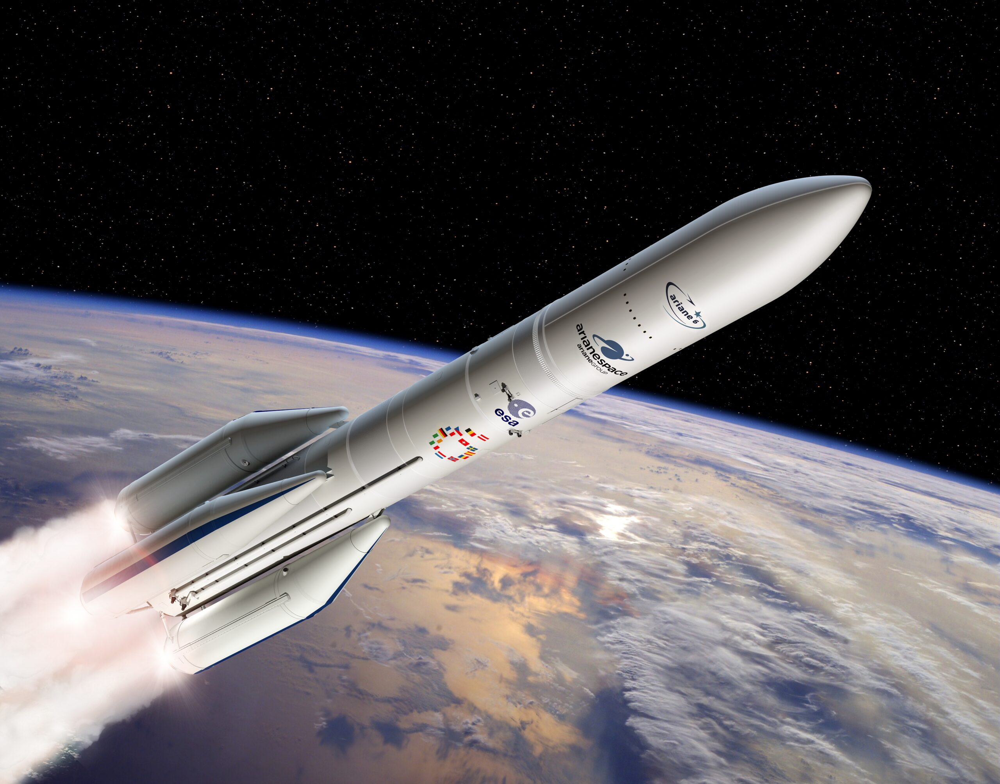
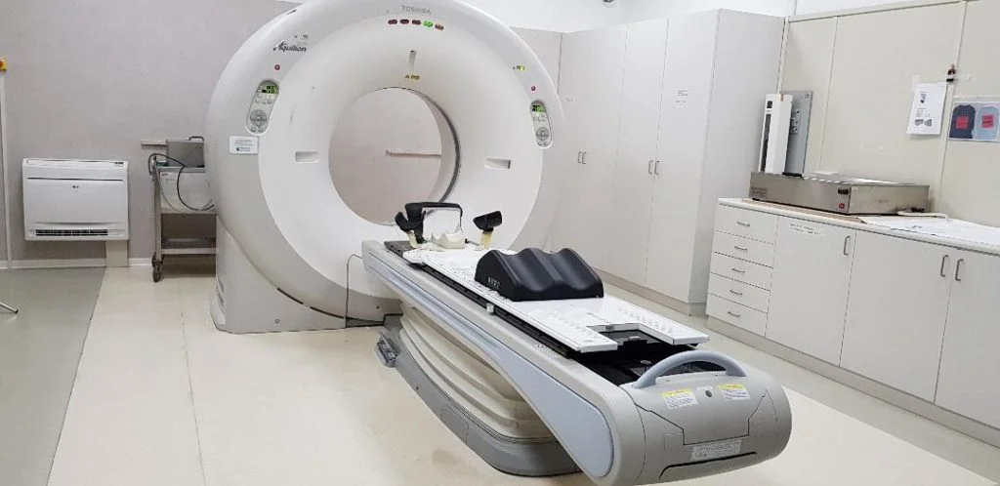

- Circa 370 milioni di dollari
- Il lancio inaugurale del razzo Ariane 5 dell'Agenzia Spaziale Europea fallì a causa di un bug nel software.
- Perdita di un razzo da 370 milioni di dollari e di carichi utili scientifici di alto valore.

- Circa 440 milioni di dollari in 45 minuti
- Knight Capital, una grande società di trading finanziario, installò un aggiornamento del software difettoso su uno dei suoi server.
- Perdita finanziaria enorme e fine dell'azienda come entità indipendente.

- Diverse vite umane
- Therac-25 era una macchina per la radioterapia utilizzata negli ospedali.
- Almeno 5 persone morirono e molte altre subirono gravi lesioni a causa di sovraesposizione alle radiazioni.
- Perdita di vite e milioni di dollari
- Un errore di arrotondamento in un sistema di temporizzazione del software del Patriot Missile causò il fallimento dell'intercettazione di un missile Scud iracheno. Il missile colpì una caserma dell'esercito statunitense, uccidendo 28 soldati.
- Perdita di vite umane e di fiducia nella tecnologia di difesa.

- Circa 100 miliardi di dollari in preparazione e mitigazione
- Sebbene non ci sia stata una grande catastrofe, il "Millennium Bug" ha richiesto investimenti massicci per evitare il collasso dei sistemi informatici.
- Anche se il bug non causò gravi danni, il costo per la prevenzione fu enorme.
- Circa 475 milioni di dollari
- Un bug nei processori Intel Pentium causava errori di calcolo nelle divisioni in virgola mobile. Questo difetto divenne un problema di pubbliche relazioni per Intel dopo che gli scienziati iniziarono a notare discrepanze nei loro calcoli. I
- Costi enormi di sostituzione e danno alla reputazione di Intel.
- Perdita di un'auto
- Un aggiornamento del software del Tesla Model S causò il blocco dei freni a mano di alcune auto.
- Danni materiali e possibili rischi per la sicurezza.
- Decine di milioni di dollari
- Un aggiornamento software difettoso nel sistema di commutazione di AT&T portò a un blocco che durò circa 9 ore.
- Danno alla reputazione e perdite finanziarie per AT&T, oltre a disagio per milioni di utenti.
- Il sistema MCAS (Maneuvering Characteristics Augmentation System) del Boeing 737 Max, progettato per correggere il comportamento di volo dell'aereo, aveva un bug che portava a una serie di incidenti aerei mortali.
- La Boeing subì gravi perdite economiche, danni alla reputazione e costi enormi per riparare il software e certificare nuovamente il modello. L’aereo fu bloccato a terra per quasi due anni.
Responsive Topnav Example
Resize the browser window to see how it works.